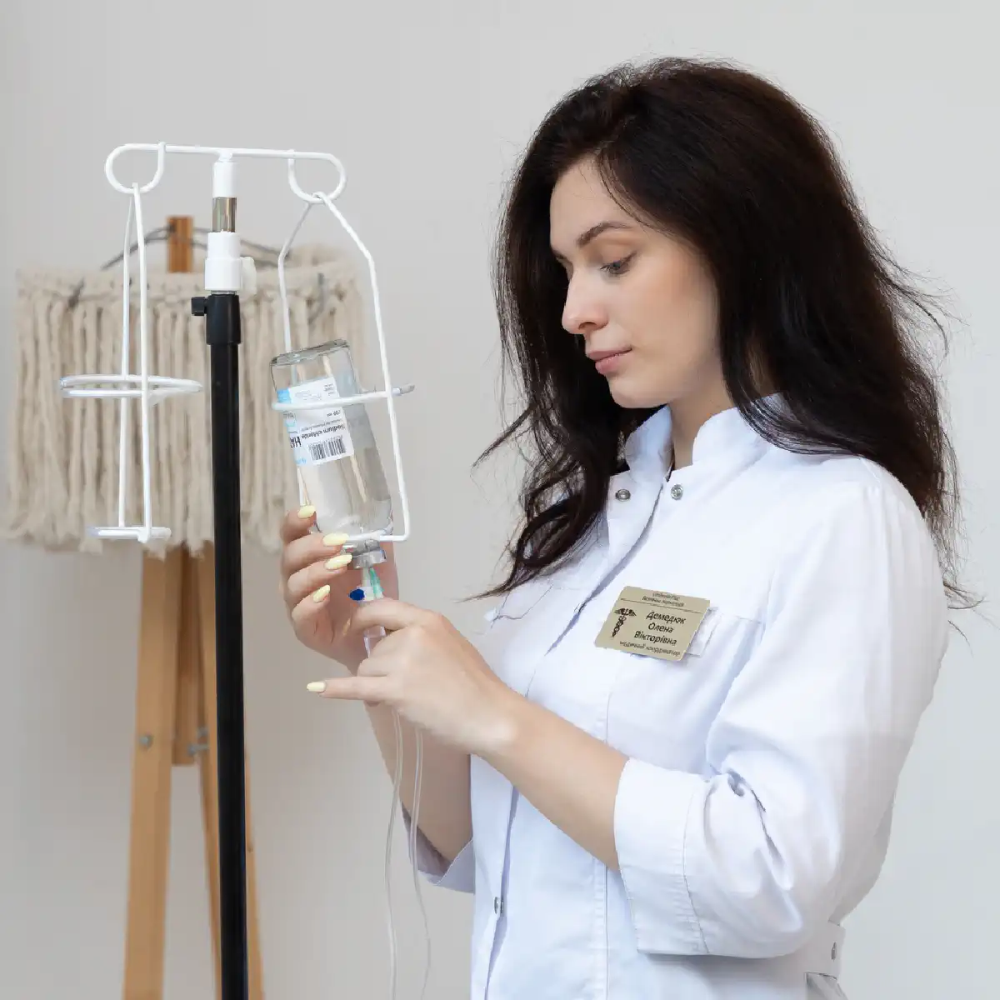

+38(068) 79 72 782
+38(068) 79 72 782Лечение женского алкоголизма Киев
Ваше здоровье на первом месте!


Бесплатная консультация, работаем круглосуточно 24/7
Ваше здоровье на первом месте!
Женский алкоголизм — это не просто вредная привычка, а серьёзное заболевание, которое требует немедленной и профессиональной помощи. Из-за особенностей женского организма, эта зависимость развивается в несколько раз быстрее, чем у мужчин, и приводит к более тяжёлым последствиям для здоровья, включая необратимые изменения в печени, сердце и нервной системе.
Лечение женского алкоголизма в Киеве в медицинской службе UmbrellaPlus основано на комплексном подходе, который учитывает все физиологические и психологические особенности женского организма. Наши врачи не просто устраняют физическую тягу, а работают с глубинными причинами зависимости, помогая женщине восстановить ментальное здоровье, самооценку и вернуться к полноценной жизни.
Женский алкоголизм часто развивается скрытно, маскируясь под усталость, стресс или другие проблемы. Ранние симптомы могут быть едва заметны, но их важно распознать, чтобы своевременно начать лечение и предотвратить необратимые последствия.
По мере прогрессирования болезни симптомы становятся всё более очевидными и разрушительными. Зависимость начинает влиять не только на психическое, но и на физическое состояние, а также на социальную жизнь женщины.
Женский алкоголизм, как и мужской, развивается постепенно, проходя через три основные стадии. Важно понимать, как прогрессирует болезнь, чтобы вовремя её остановить.
Начальная стадия. На этом этапе формируется психологическая зависимость. Женщина начинает использовать алкоголь как способ расслабиться, снять стресс или справиться с эмоциональными проблемами. Употребление алкоголя становится регулярным, но пока ещё не вызывает серьёзных физических последствий.
Средняя стадия. На этом этапе к психологической зависимости добавляется физическая. Появляются запои, которые могут длиться несколько дней. Отказ от алкоголя вызывает абстинентный синдром, который проявляется в виде дрожи, тошноты, головной боли и тревоги. Наблюдаются изменения в психике и поведении: раздражительность, агрессия и потеря интереса к прежним увлечениям.
Конечная стадия. Это самая тяжёлая стадия, на которой организм полностью истощён. Наблюдается деградация личности, потеря контроля над собой и необратимые изменения во внутренних органах: цирроз печени, сердечная недостаточность и нарушения работы нервной системы. На этом этапе человеку требуется немедленная медицинская помощь, чтобы спасти его жизнь.
Стоимость лечения женского алкоголизма в Киеве начинается от 2700 грн.
| Популярные услуги | Цена |
|---|---|
| Вывод из запоя на дому | От 2700 грн |
| Капельница от алкоголя | От 2700 грн |
| Капельница от наркотиков | От 3000 грн |
| Кодирование от алкоголизма Киев | От 6000 грн |
Лечение женского алкоголизма — это сложный, но необходимый процесс, который требует особого подхода, учитывающего все физиологические и психологические особенности женского организма. Путь к выздоровлению проходит через несколько ключевых этапов, каждый из которых имеет решающее значение.
1.Осознание проблемы: Первый и самый важный шаг
Этот этап — самый трудный, но и самый важный. Женщине приходится преодолеть огромное чувство стыда и вины, чтобы признать свою зависимость. Осознание проблемы — это не просто признание, а первый акт самолюбия и мужества. Это та точка, с которой начинается исцеление, и без которой ни один метод лечения не сработает.
2.Обращение к специалисту: Доверие и профессионализм
Как только решение принято, важно обратиться в специализированную клинику, где могут оказать квалифицированную помощь. Профессионалы понимают уникальные потребности женщин и создают атмосферу доверия, в которой можно открыто говорить о проблеме без страха осуждения.
3.Детоксикация: Мягкое очищение организма
Это первый медицинский этап, направленный на очищение организма от токсинов с помощью капельниц. Для женщин этот процесс требует особого внимания из-за повышенной чувствительности организма к алкоголю. Мягкая и контролируемая детоксикация помогает снять тяжёлый абстинентный синдром и подготовить тело к дальнейшему лечению.
4.Кодирование от женского алкоголизма: Надёжная защита
После физического очищения организма наступает этап кодирования. Этот метод помогает сформировать мощный физиологический барьер против употребления алкоголя. Для женщины это даёт бесценную возможность освободиться от постоянной борьбы с тягой и сфокусироваться на психологической работе, не боясь срыва.
5.Психотерапия и реабилитация: Путь к исцелению
Психотерапия является ключевым элементом в лечении женского алкоголизма. Она помогает выявить и устранить глубинные психологические причины зависимости, такие как депрессия, тревожность, травмы или низкая самооценка. Реабилитация — это завершающий этап, в процессе которого женщина учится восстанавливать отношения с близкими, возвращает самоуважение и находит новые, здоровые увлечения, чтобы навсегда вернуться к полноценной и счастливой жизни.
Начать лечение можно с простого и безопасного шага — анонимной консультации по телефону. Мы понимаем, как сложно сделать первый звонок, поэтому гарантируем полную конфиденциальность и отсутствие осуждения. Этот разговор не обязывает вас ни к чему, но даёт возможность получить ответы на все вопросы, развеять страхи и почувствовать поддержку. Наш специалист выслушает вас, оценит ситуацию и поможет выбрать оптимальный план лечения, который подойдёт именно вам. Мы предлагаем два основных формата терапии, чтобы каждый мог найти подходящий для себя вариант:
Какой бы формат вы ни выбрали, помните, что первый шаг — это самый важный. Сделайте его сегодня.
Капельница от алкогольной интоксикации — это первый и самый важный шаг в лечении, который обеспечивает быстрое и безопасное возвращение к нормальному состоянию. Эта процедура помогает не только вывести из организма токсины и продукты распада алкоголя, но и восстановить критически важный водно-солевой баланс, который нарушен из-за обезвоживания.
Основная задача капельницы — облегчить мучительные симптомы абстинентного синдрома. Она помогает снять такие неприятные проявления, как сильная тошнота, тремор, головная боль, учащённое сердцебиение и тревожность. В состав раствора входят специальные препараты, витамины и минералы, которые нормализуют работу нервной системы и внутренних органов.
Стабилизация физического состояния пациентки с помощью капельницы является необходимой основой для дальнейшей терапии. Только после того, как организм очищен и симптомы абстиненции устранены, человек может трезво мыслить и принимать осознанные решения о своём будущем. Это позволяет успешно перейти к следующим этапам лечения и начать путь к полному выздоровлению.
Психотерапия является ключевым элементом в лечении женского алкоголизма, поскольку она направлена на исцеление не только тела, но и души. В отличие от мужчин, женщины чаще используют алкоголь как способ справиться с глубинными эмоциональными проблемами, стрессом или чувством одиночества, что требует особого, доверительного подхода. Психотерапевт помогает пациентке разобраться в причинах зависимости, которые часто кроются в:
Психотерапевтическая работа создает безопасное пространство, где женщина может открыто говорить о своих переживаниях без страха осуждения. Это помогает ей научиться справляться со стрессом и негативными эмоциями без алкоголя, находить новые, здоровые способы расслабления и общения, а также восстановить утраченное самоуважение. Именно этот процесс восстановления психического здоровья является залогом стойкой и длительной ремиссии.
Если вы или ваша близкая столкнулись с этой проблемой, помните: выход есть. Лечение женского алкоголизма — это не просто медицинская процедура, а надёжный путь к выздоровлению, который возвращает контроль над жизнью.
Медицинская служба UmbrellaPlus создала программу, которая учитывает все физиологические и психологические особенности женского организма. Мы гарантируем полную анонимность, профессионализм и индивидуальный подход к каждой пациентке. Наши специалисты понимают, как сложно сделать первый шаг, и готовы стать вашей опорой на этом пути. Наши врачи работают круглосуточно, чтобы помочь вам в любой момент, когда вы будете готовы.
Не откладывайте своё выздоровление. Позвоните нам прямо сейчас и получите помощь, которая поможет вам обрести внутреннюю гармонию, восстановить здоровье и вновь почувствовать себя сильной и счастливой.
Телефон: +38(050-021-69-57)
Да, мы строго соблюдаем полную конфиденциальность на всех этапах лечения. Информация о пациенте, диагнозе и прохождении терапии не передаётся третьим лицам. Обращение к нам не влечёт постановку на учёт. Вы можете быть уверены в безопасности и анонимности.
Программа лечения разрабатывается индивидуально после консультации со специалистом. Учитываются вид зависимости, её длительность, физическое и психологическое состояние пациента. Такой подход позволяет повысить эффективность терапии и снизить риск срыва. Мы не используем шаблонные решения.
Да, мы сопровождаем пациентов и после основного курса лечения. Проводятся консультации, рекомендации по адаптации и профилактике рецидивов. При необходимости возможна дальнейшая психологическая поддержка. Это помогает сохранить результат и вернуться к полноценной жизни.
Анонимно

Никакими усилиями самостоятельно я не смогла преодолеть запой, и наступала ломка, сопровождаемая повышенным давлением и пульсом. Тогда я решила обратиться за помощью в клинику. Врачи оказали мне неоценимую поддержку! Уже прошел месяц, и я не только не употребляю алкоголь, но даже не испытываю к нему желания!
Анонимно
Могу с уверенностью порекомендовать данный центр для тех, кто ищет помощь при выводе из запоя. Я неоднократно обращался к ним и могу сказать, что цена соответствует качеству услуг. После проведения капельницы в клинике, вся тяга к алкоголю проходит, и я чувствую себя гораздо лучше. Это действительно эффективный метод, и я благодарен клинике за их профессионализм и заботу!
Анонимно
Неоднократно я пытался бросить алкоголь самостоятельно, но каждый раз уговаривал себя продолжать. Я сначала ограничивался одной бутылкой в день, потом двумя, и в итоге вновь попадал в запой. Но в итоге, я смог прекратить употребление алкоголя только после того, как обратился в центр Амбрелла и заказал у них услугу вывода из запоя. Уже не пью 3 месяца и удалось полностью восстановиться. Благодарю врача который меня вел - Алексея Валерьевича.
Анонимно
Здравствуйте! Я хотел бы выразить свою искреннюю благодарность клинике за быстрое и профессиональное освобождение моего мужа пивного рабства! Ранее у меня уже не было никаких надежд на его выздоровление. Однако, благодаря вашим перспективным методам лечения, мы теперь идем к полному отказу от алкоголя. Вы дали нам новую надежду и оказали неоценимую помощь! Спасибо вам за все!
Анонимно
Я долгое время страдал от запоев и не мог справиться с этой проблемой. Однако, когда я обратился в этот центр, они быстро помогли мне вернуться на ноги, и самое главное - предоставили мне возможность не возвращаться к запоям. Уже почти полгода я не испытываю запоев! Это для меня настоящее чудо, я никогда не думал, что смогу так преодолеть свои проблемы. Большое спасибо центру Амбрелла!
Анонимно
Благодарю ваш центр Амбрелла за оперативное и высококачественное лечение! Женский алкоголизм - это настоящее горе, с которым невозможно справиться в одиночку. Я уже потеряла надежду, но благодаря вашей помощи, она вернулась ко мне! Отдельная благодарность врачу Станиславу Вячеславовичу, а также благодарность Богу за то, что он послал мне такое чудо как ваша центр! Спасибо вам всем!
Анонимно
Хочу выразить благодарность врачу Владиславу Алексеевичу за то, что вы избавили меня от этого ужаса. Я уже был в отчаянии, перепробовал множество клиник и центров, но только здесь я наконец получил настоящую помощь! Алкоголь полностью разрушил меня, и если бы не ваша помощь, я, возможно, уже не был бы жив. С вами я смог вернуть себе жизнь и буду благодарен вам всегда!
Номер телефона:
+380 (68) 797 27 82
+380 (50) 021 69 57
Адрес наркологического центра вашего города уточняйте по
телефону
Работаем в: Киеве, Одессе, Львове, Харькове, Днепре,
Запорожье, Черкассах, Чугуеве, Черноморске, Каменском
Telegram: t.me/umbrellaplus
График работы: Круглосуточно